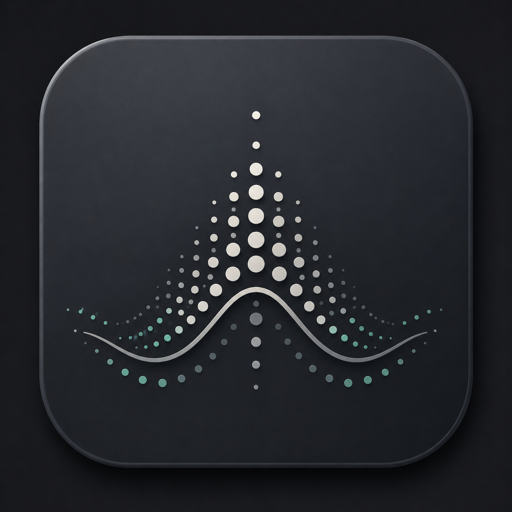
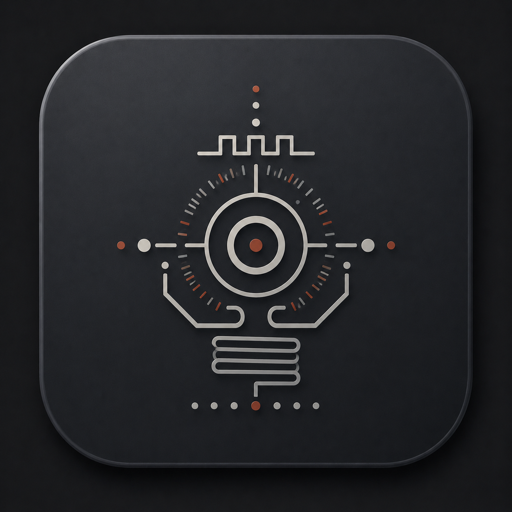
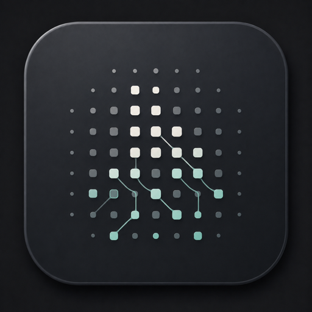
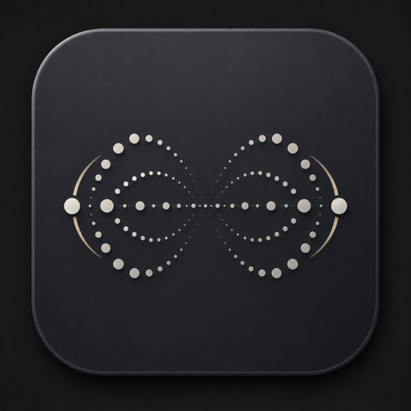
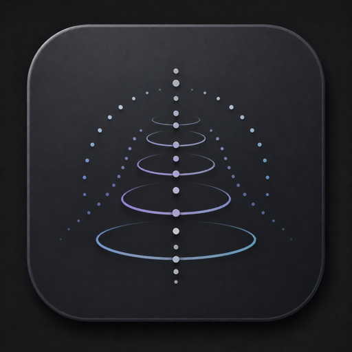
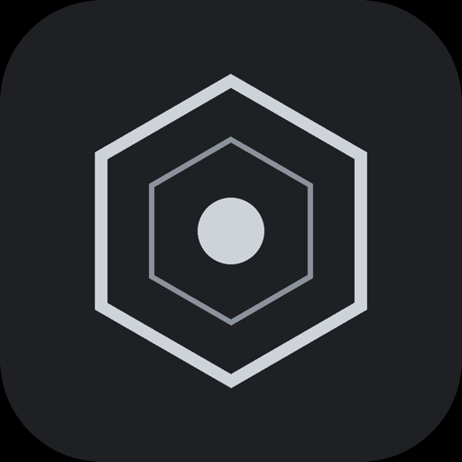

Products
Two branches, one studio. Jump to a category, or browse the full catalog below.

Statistics & emergence as patchable CV
Real statistical, social and stochastic processes turned into control voltage — sampling distributions, the bootstrap, agent-based cascades, epidemics, reaction–diffusion. Quirky generative material with correct math underneath.

Soviet machines meet the West Coast
Eight sound-design modules with a deliberate Eastern-bloc analog character, shaped by the West Coast tradition of complex oscillators and function generators: drum voices, oscillators, a master clock, a plate reverb and generative sequencers.

Generative systems, made visible
Emergent systems you watch evolve on screen and patch as CV. Colony is a cellular-automaton grid; Turing is a probabilistic shift-register sequencer with a built-in quantizer.

Rhythmic delay & gate effects
Four tempo-synced effects: a rhythmic amplitude gate, a stereo ping-pong delay, a multi-tap pattern delay and a crossfader. Lock them to your clock for movement in time and across the stereo field.

Tone, space and time
A transistor-ladder filter (Helix), a stereo color repeater (Halo), a character delay with reverb (Skywave) and an eight-stage step sequencer (Metro185).
Synthesizers & instruments · sound sources you play

Subtractive synthesizer
The essential analog voice, built to stack — two band-limited oscillators, sub and noise into one clean state-variable filter, with filter and amp envelopes, an LFO and a compact mod matrix. Featherweight on the CPU.

Wavetable synthesizer
A synth built around modulation you can touch: band-limited morphing wavetables, warp into FM and ring-mod, drawable LFOs, a 48-slot matrix and a studio FX rack with plate reverb, bus compressor and maximizer.

Slice instrument
Chop a loop into playable slices across the keyboard, shape each hit and grab the keepers to your library — the chop-and-play workflow, distilled. ReCycle × Serato Sample.
Effects · modulation · space

Multi-LFO modulation rack
Draw modulation on a curve editor and lock it to the beat — four curve-LFOs over volume, pan and filter, with multiband routing and MIDI out. The first SHLabs VST.

Reverb–delay continuum
Studio delay, lush modulated reverb and everything in between on one CONTINUUM control: tempo-synced echoes that smear and bloom into tails, two-band decay, freeze, ducking and a live decay-profile display.
Mastering tools · the last mile of a mix

Mastering bus compressor
The SSL-style glue that holds a mix together — stepped controls, program-dependent release, sidechain high-pass, Mid/Side and a parallel mix, with a big gain-reduction meter.

Mastering equaliser
A draggable curve over a live spectrum — up to 24 bands, eight filter types, 6–96 dB/oct slopes and per-band Left/Right or Mid/Side. Surgical or musical.
MIDI generators & composers · sequencing & harmony brains

MIDI harmony conductor
A Sinfonion-style brain: master key and scale, an interactive Tonnetz lattice, three quantizers, a voiced chord generator, arp, bass, drone and a progression sequencer — driving your synths.

MIDI step sequencer
A deep eight-step sequencer in the RYK M-185 / System 100m lineage, reimagined for the DAW — ratchets, 34 scales, gate modes, play directions, MIDI-learn and pattern save.

Nothing gets lost
Generative modules are seedable and every plugin recalls its full state — stumble onto a sound you love and dial it back any time. Save it, share it, and it plays the same on every machine.
Built to be played
Whether it's a panel in the rack or a plugin window in your DAW, the interface is a control surface, not decoration — drag-to-assign modulation, MIDI-learn, sensible defaults and no telemetry.
Real under the hood
The processes are the real thing — analog-modelled circuits, feedback, sampling, stochastic motion — but every tool is voiced as an instrument first: expressive, surprising, and made to be listened to.